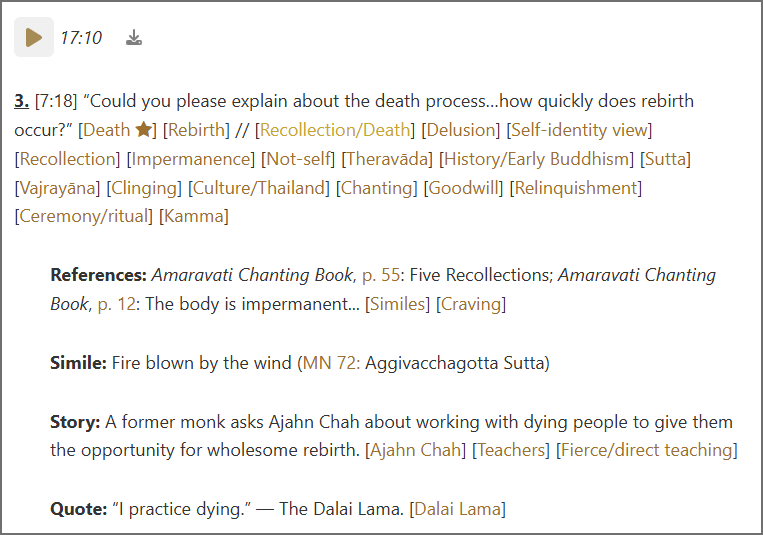

Search instructions
The search page allows one to search excerpts for text, tags, and teachers. One can narrow the search to specific kinds of teaching or events. Simple queries are easy, but more complex searches require an understanding of how the search engine works. Read this page only as far as you need to and then start searching.
The December 2024 release adds a "Search all" button which simultaneously searches key topics, subtopics, tags, teachers, events, and excerpts. Most of the documentation below still applies.
Searching for text
To search for text, tags, or teachers, simply type the text into the search bar.
By default the search finds text within words. To find whole words only, enclose the word in double quotes. To find a phrase, enclose the phrase in double quotes.
For example, searching for Thai finds both Thai and Thailand, but searching for "Thai" finds only Thai.
Searching for tags
Use brackets to search for excerpts tagged with specific tags:
Search for a single tag: [Happiness]
Search for all tags beginning with characters: [History*]
Search for all tags ending with characters: [*Pasanno]
Search for all tags containing characters: [*Thai*]
Searching for teachers
Use braces to search for excerpts offered by specific teachers:
Search for a single teacher: {Ajahn Dtun}
Search for all teachers beginning with characters: {Mae Chee*}
Search for all teachers ending with characters: {*Pasanno}
Searching for featured excerpts
To limit the search to featured excerpts, add + after the search terms, e. g. Thai +.
Searching by kind
To search for excerpts containing a specific kind of teaching, use a hash mark before or after the type of teaching:
Search for excepts containing a direct quote and the characters 'Thai': #Quote Thai
Search for excepts containing an indirect quote and the characters 'Thai': #IndirectQuote Thai
Searching by category
Excerpt kinds are grouped into categories as follows:
Questions: Question, Response, FollowUp
Stories: Story, Recollection
Teachings: Teaching, Reflection, Simile, DhammaTalk
Quotes: Quote, IndirectQuote
Meditations: MeditationInstruction, GuidedMeditation, Chanting
Readings: Reading
References: Reference, Sutta, Vinaya, Commentary
Other: Comment, Discussion, Note, Summary, Other
Attribution: ReadBy, TranslatedBy
Use an ampersand (&) before the category name to search for excerpts in that category.
Search for any quote containing the characters 'Thai': &Quotes Thai
Searching by event
To search for excerpts from a specific event use the @ symbol before the event code. Event codes are of the form Metta2008 or UD2015-3 and contain a four-digit year. One can find event codes in the hyperlinks on the Events page. Since all events in a series begin with the same characters, one can search for excerpts from a particular series:
Search for Thanksgiving Retreats: @TG
Search for Winter Retreats: @WR
Search for Spirit Rock Daylongs: @SRD
Search for Upāsikā Days: @UD
Search for events from the year 2015: @*2015
Advanced searching
To go beyond the recipies above, it is necessary to understand the search engine in detail. The search engine converts excerpts and annotations into a series of blobs in which special characters are used to indicate tags, teachers, kinds, and events. For example, this excerpt:

is converted into these five blobs:
^could you please explain about the death process...how quickly does rebirth occur?^{ajahn pasanno}[death]+[rebirth]//[recollection/death][delusion][self-identity view][recollection][impermanence][not-self][theravada][history/early buddhism][sutta][vajrayana][clinging][culture/thailand][chanting][goodwill][relinquishment][ceremony/ritual][kamma]|#question#&questions&@metta2008@s01@^chanting book p 55: five recollections; chanting book p 12: the body is impermanent...^{}//[similes][craving][rebirth]|#reference#&references&^fire blown by the wind (mn-72: aggivacchagotta sutta)^{ajahn pasanno}//[]|#simile#&teachings&^a former monk asks ajahn chah about working with dying people to give them the opportunity for wholesome rebirth.^{ajahn pasanno}//[ajahn chah][death]+[teachers][rebirth][fierce/direct teaching]|#story#&stories&^i practice dying. the dalai lama^{ajahn pasanno}//[dalai lama][recollection/death]|#indirectquote#"es&
The format of each blob can be informally represented as: ^text^{teachers}[qTags]//[aTags]|#kind#&category&@eventCode@sNN@.
sNN is the zero-padded session number, so Session 1 is s01. [qTags] and @eventCode@sNN@ do not appear in annotations. Text-only searches match text on the left of the | separator symbol. To match kind, category, and eventCode, the query must include the symbols #, &, or @.
Tags for which this excerpt is featured are marked +, e.g. [death]+.
Search queries are broken into individual strings separated by spaces. If all search strings can be found within an excerpts' blobs, then the excerpt is considered to be found.
The search engine implements the following wildcard characters:
_ matches any single character except those with special meaning in the blobs: #^[]{}@
* matches any number of characters except those with special meaning
$ matches a word boundary
Spaces divide individual search strings except for groups of characters enclosed in double quotes. Characters enclosed in double quotes only match word boundaries, but this can be changed using *. For example, "Thai*" and $Thai are equivalent queries.